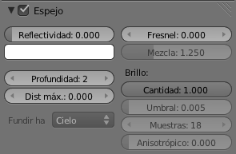
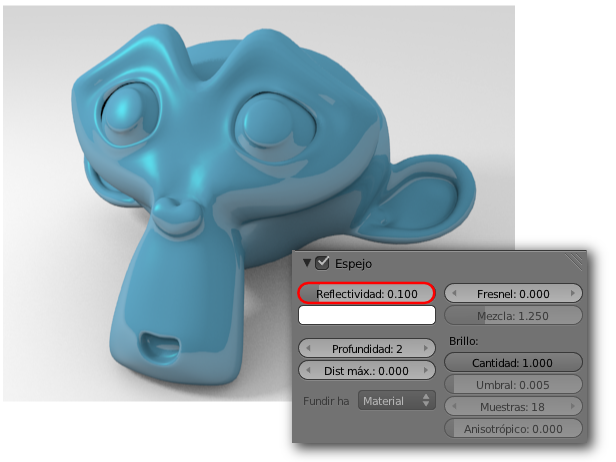
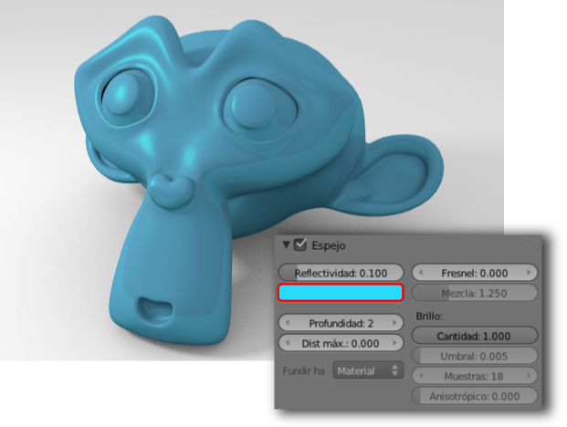
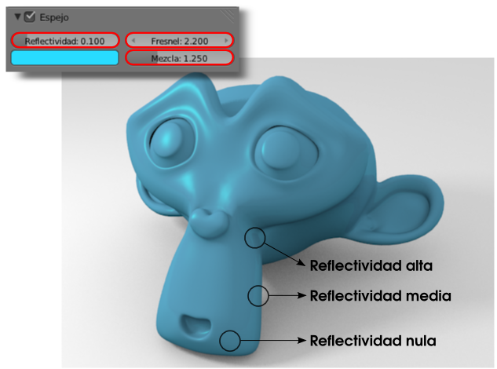

Reflectividad
Además de la capacidad de reflejar luz (Especular) el material puede tener la propiedad de reflejar el entorno. El caso más fácil de comprender es un espejo que refleja el 100%.
Lo primero que debemos hacer es decirle a Blender que queremos otorgarle esa propiedad al material activando la opción en la botonera Espejo.
Esto permite tener definidas estas propiedades y activarlas o desactivarlas en momentos puntuales.
Antes de seguir...
Debemos tener en cuenta un par de detalles importantes:
- La propiedad de reflejar el entorno no se hará evidente en el editor Vista 3D sino que sus consecuencias las veremos directamente en el render.
- Este tipo de propiedades, como la transparencia, consumen muchos recursos porque los cálculos internos del programa son muy complejos. Esto se traduce en un aumento considerable de los tiempos de render.
El hecho de haber activado la propiedad Espejo no supone nada de momento porque el parámetro Reflectividad está a cero. Si aumentamos a un valor como puede ser 0.100 esta es la consecuencia en el render (el modelado incluye un plano a modo de suelo para que haya algo en el entorno que pueda ser reflejado).
Vemos que nuevamente disponemos de la posibilidad de editar el color del que se tiñe toda esa reflectividad. En nuestro ejemplo, ya que no es un espejo que refleje un 100%, lo normal será que lo reflejado adquiera un color cercano al del color Difuso.
Sin embargo la realidad es muy distinta. Salvo en espejos y superficies similares, como los cromados, lo habitual es que se produzca un efecto denominado Fresnel y que hace que la cantidad de Reflectividad no sea homogénea en una superficie sino que dependa del ángulo entre ésta y el observador. En esencia el efecto Fresnel dice que a mayor ángulo, mayor reflectividad.
